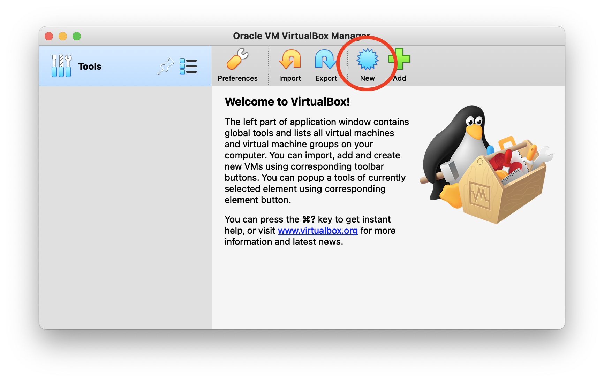
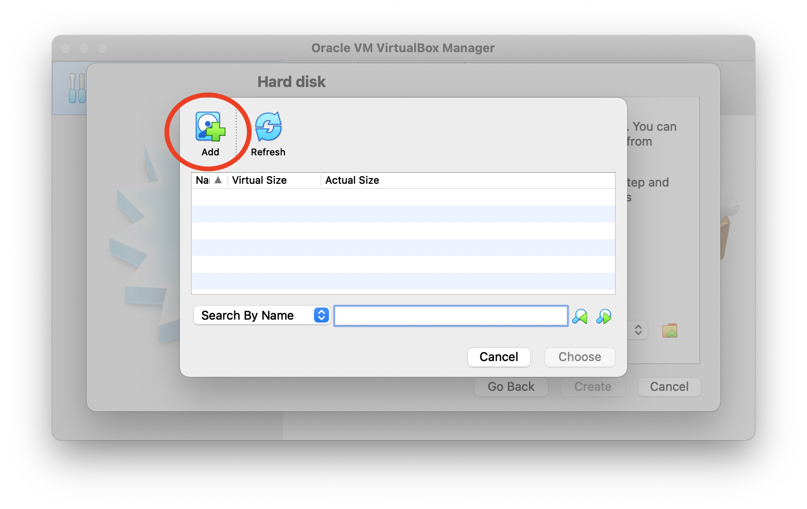

1. Install the latest version of VirtualBox
2. Open VirtualBox and click on the New button
3. Fill in the Name, Type and Version as shown below and click Continue. Leave the Machine Folder as the default value

4. We will now allocate RAM to the virtual machine. Drag the slider up to just before the green colour ends and hit Continue

5. Select Use an existing virtual hard disk file and use the button highlighted below.

6. Click Add to select the genomics_course_2021.v1.1.vdi file you have received. Then click Choose and then Create
7. You can now start the virtual machine by selecting the genomics_course virtual machine and clicking on Start
If you are having trouble starting the virtual machine it might be the VDI file has been corrupted. You can check the integrity of it using a program called md5 and checking that the checksum matches 12db54fac179f9a896622777c6415f0d.
8. After successfully starting up the VM, you might be prompted to install upgrades. Decline by pressing "Close". Now you are ready to go!